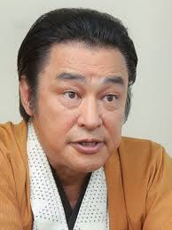

Daijiro Harada is a Japanese voice actor who voiced the dog, Heen, in the film Howl's Moving Castle.
- Gender: Male
- Birthday: April 5, 1944
| |
Daijiro Harada is a Japanese voice actor who voiced the dog, Heen, in the film Howl's Moving Castle.
|
 |
|---|
 |
Heen | Howl's Moving Castle | Heen is an odd dog who does Madame Sulliman's errand. |